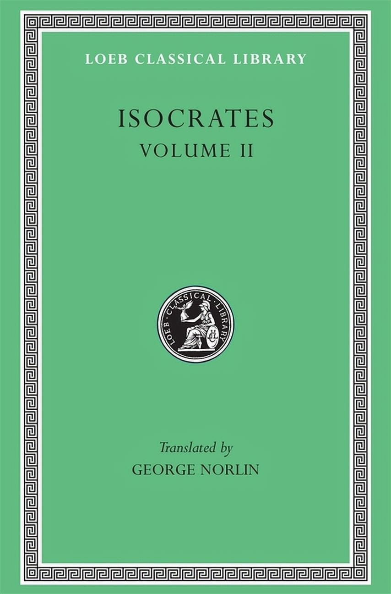
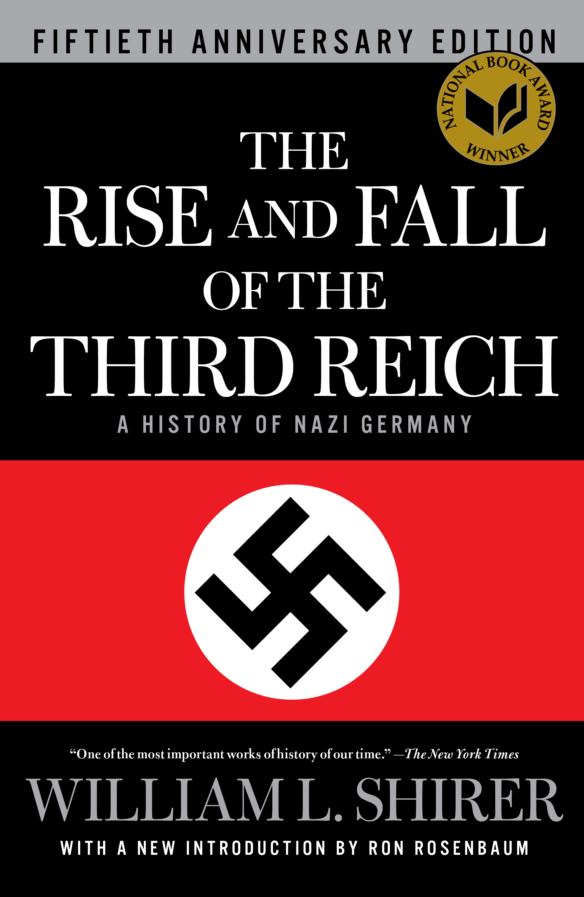
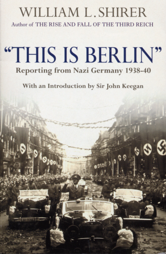
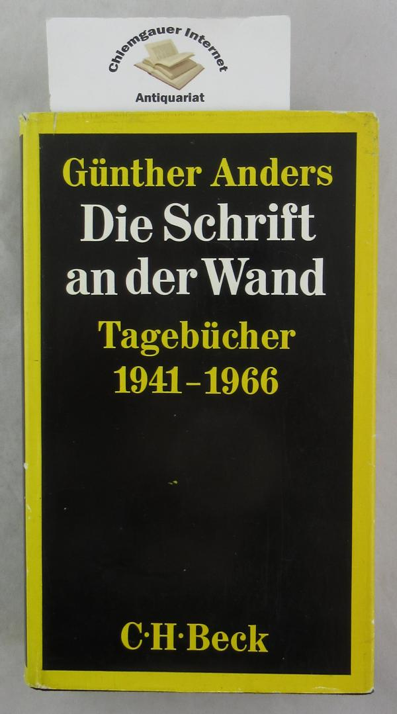

54:07 · 12 OPERE
La patina della civiltà.
Il filo del discorso
Che cosa impedisce a una società colta di smarrire il proprio orientamento morale? Il relatore cerca una risposta accostando l’Areopagitico di Isocrate ai reportage di William L. Shirer e ai diari di Günther Anders. Il sentirsi al sicuro può, nella lettura proposta, rendere meno attenti ai pericoli; le testimonianze del passato invitano a giudicare il presente senza considerare irrevocabili libertà e garanzie. Il lavoro di Anders tra i costumi cinematografici apre il problema della storia sostituita dalle sue rappresentazioni. Da Dostoevskij ed Erasmo fino a Lemony Snicket, gli esempi interrogano coscienza, travestimento e capacità di riconoscere gli interessi di chi racconta. La parte finale discute propaganda, emozioni e cognizione, tornando con Trilling al dovere di pensare. Le analogie con la politica contemporanea restano attribuite al relatore; la scheda distingue le opere citate, gli errori storici del parlato e i risultati scientifici dalle loro applicazioni polemiche.
I libri nel discorso

Areopagitico
Raccolta Isocrates, Volume II · contiene l’Areopagitico: Copertina della raccolta Isocrates, Volume II, traduzione greco-inglese di George Norlin, Loeb Classical Library 229, Harvard University Press, ISBN 9780674992528. La prima pubblicazione del volume Loeb è del 1929; la tiratura della copertina corrente non è determinata. La raccolta contiene anche On the Peace, Against the Sophists, Antidosis e Panathenaicus. Non è la copertina di un Areopagitico autonomo o del volume I.
Copertina autentica con Volume II e George Norlin, vista interamente. Il contenuto è riscontrato nel catalogo Perseus; il numero delle pagine varia fra ristampe e record e non è attribuito all’esemplare del video.
Titolo, autore e lettura dell’esordio espliciti; datazione tradizionale discussa.
Passaggio 3:18 ↗ · Fonti e libro ↗
Areopagitica. Discorso per la libertà di stampa
Copertina della raccolta Areopagitica and Other Prose Works: Dover Thrift Editions · Areopagitica and Other Prose Works, 2016
Immagine ufficiale della raccolta Dover 2016: contiene il discorso Areopagitica insieme ad altri scritti di Milton. Non è attribuita al video una traduzione o un’edizione determinata.
Milton e Areopagitica del 1644 espliciti, distinti dal testo greco.
Passaggio 3:27 ↗ · Fonti e libro ↗
The Rise and Fall of the Third Reich: A History of Nazi Germany
Copertina: Opera originale del 1960. Copertina della edizione rilegata Simon & Schuster dell’11 ottobre 2011, 1280 pagine, introduzione di Ron Rosenbaum, ISBN 9781451642599, celebrativa del cinquantenario del National Book Award. Non è la copertina italiana Einaudi o una nuova opera distinta.
Immagine autentica dell’opera, controllata visivamente; l’edizione di riferimento non è attribuita al filmato.
Storia dell’ascesa e del declino del Terzo Reich citata in italiano, in due volumi.
Passaggio 15:19 ↗ · Fonti e libro ↗
This Is Berlin: Reporting from Nazi Germany, 1938–40
Identificazione probabile
Copertina: Reportage del 1938–1940, raccolti in volume nel 1999; esistono edizioni britanniche e americane con sottotitoli e paginazioni diversi. Immagine ufficiale dell’ebook Cornerstone Digital, 30 giugno 2013, 464 pagine nel catalogo, ISBN 9781448184934. Non è attribuito al video questo formato digitale né sono trasferite le 450 pagine della edizione americana Overlook alla edizione britannica.
Immagine autentica dell’opera, controllata visivamente; l’edizione di riferimento non è attribuita al filmato.
Reportage CBS 1938–1940 e prefazione di Inga Shirer Dean dicembre1998: identificazione probabile, titolo non pronunciato.
Passaggio 17:54 ↗ · Fonti e libro ↗
Die Schrift an der Wand. Tagebücher 1941–1966 (La scritta sul muro)
Copertina: München, C. H. Beck, 1967, 428 pagine. Fotografia autentica della sovraccoperta di un esemplare della prima edizione secondo la descrizione antiquaria, con il cartellino del venditore visibile. La edizione Union 1969 e la successiva ripubblicazione di parti dei diari sono distinte. Non è la copertina di Besuch im Hades, che riprende soltanto una parte del volume.
Sovraccoperta fotografata integralmente: autore, titolo, arco 1941–1966 e marchio C. H. Beck leggibili. Il cartellino dell’antiquario è parte della fotografia, non un segnaposto editoriale. Nessun ISBN ricostruito o attribuito con certezza all’esemplare.
Diari1941–1966, La scritta sul muro e nota14marzo1941 espliciti.
Passaggio 24:05 ↗ · Fonti e libro ↗
Bibbia
Copertina: San Paolo, 2014 · Nuova Versione dai Testi Antichi · edizione di riferimento
Richiamo biblico del titolo di Anders; più tardi confronto privato fra traduzioni, versetto non identificato.
Passaggio 24:15 ↗ · Fonti e libro ↗
Delitto e castigo
Copertina: BUR · introduzione di Clara Strada Janovic, edizione di riferimento 1983
Immagine autentica dell’opera, controllata visivamente; l’edizione di riferimento non è attribuita al filmato.
Raskolnikov, Delitto e castigo e coscienza espliciti.
Passaggio 31:26 ↗ · Fonti e libro ↗
Papa Giulio scacciato dai cieli
Copertina: Argo, 1998
Erasmo e Papa Giulio scacciato dai cieli espliciti.
Passaggio 31:58 ↗ · Fonti e libro ↗
Il contratto sociale
Copertina: Laterza · Economica · ristampa 2023 · edizione di riferimento
Rousseau e contratto sociale espliciti, senza indicazione di una edizione.
Passaggio 34:57 ↗ · Fonti e libro ↗
A Series of Unfortunate Events (Una serie di sfortunati eventi)
The Bad Beginning · primo volume del ciclo: Il ciclo è illustrato dalla copertina del primo volume The Bad Beginning, HarperCollins, ISBN 9780064407663, 176 pagine; il catalogo indica la pubblicazione il 25 agosto 1999. L’immagine corrente reca un richiamo alla serie Netflix e rappresenta quindi una ristampa, non un oggetto materiale sicuramente del 1999. La sua selezione illustra la serie e non aggiunge una citazione esplicita del titolo del primo volume nel filmato.
Copertina autentica ufficiale vista interamente. Il bollo Netflix è dichiarato; la data del catalogo è quella dell’opera, non prova la data della ristampa fotografata.
Autore e serie espliciti; la scheda non attribuisce al video i tredici titoli individuali.
Passaggio 40:33 ↗ · Fonti e libro ↗
Mein Kampf
Copertina: Hitler, Mein Kampf. Eine kritische Edition, Institut für Zeitgeschichte, 2016, due volumi, a cura di Christian Hartmann, Thomas Vordermayer, Othmar Plöckinger e Roman Töppel; ISBN 9783981405231.
Immagine autentica della copertina grigia dell’edizione critica dell’Institut für Zeitgeschichte. Si tratta di un’opera in due volumi: l’immagine piana di copertina non è dichiarata fotografia completa dei due volumi né edizione originale nazista. La ristampa precisa illustrata non è attribuita dal solo ISBN.
Titolo esplicito; la precedente descrizione dei due volumi commentati è probabilmente riferibile alla edizione IfZ2016.
Passaggio 46:26 ↗ · Fonti e libro ↗The Moral Obligation to Be Intelligent: Selected Essays
Copertina: Prima edizione della raccolta: Farrar, Straus, Giroux, New York, 2000, a cura di Leon Wieseltier. Copertina della brossura Northwestern University Press, ISBN 9780810124882, 592 pagine: il catalogo editoriale corrente indica agosto 2009, mentre altri record e il copyright della ripubblicazione riportano 2008. La discrepanza è dichiarata, senza trasformare 2009 nell’anno originale dell’opera.
Immagine autentica dell’opera, controllata visivamente; l’edizione di riferimento non è attribuita al filmato.
Titolo della raccolta esplicito; Lionel è il nome corretto dell’autore.
Passaggio 52:48 ↗ · Fonti e libro ↗Minutaggi ricavati da testi automatici, da riascoltare. Le identificazioni probabili sono segnalate accanto ai libri.